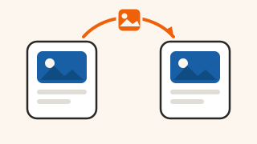
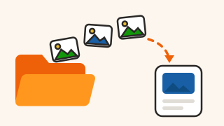
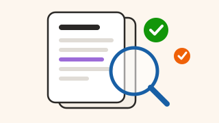

メンテナンス2026年8月14日
8月20日（水）2:00〜4:00 はシステムを止めます
設備の入れ替えのため、この時間は マワル をお使いいただけません。予約している投稿は、そのままSNSに出ます。
設備の入れ替えのため、下記の時間は マワル をお使いいただけません。
- 日時：2026年8月20日（水）午前2:00 〜 午前4:00
- 止まるもの：画面へのログイン、投稿の作成・生成
- 止まらないもの：この時間に予約している投稿は、そのままSNSに出ます
ご不便をおかけしますが、よろしくお願いいたします。
機能アップデート2026年8月8日
ドライブに動画（MP4・MOV）を置けるようになりました
これまで画像とPDFだけだった「ドライブ」に、動画も入れられるようになりました。旧「学習」のファイルもすべてドライブに移動しています。
これまで画像とPDFだけだった「ドライブ」に、動画も入れられるようになりました。撮った動画をそのまま置いておいて、投稿を作るときに選べます。
あわせて、これまで「学習」にあったファイルはすべてドライブに移動しています。場所が変わっただけで、中身はそのままです。

TIPS2026年8月5日
マワルのInstagram投稿をFacebookにも自動連携する方法
マワルからInstagramに出した投稿を、Facebookページにも自動で出す設定手順を、画面の順番どおりに説明します。
マワルからInstagramへ出した投稿は、設定をひとつ入れておくと、Facebookページにも自動で同時に出せます。同じ内容を2回作る必要はありません。
手順は3つです。
- Facebookページと Instagramアカウントを、Meta側で連携しておく
- マワルの 設定 > SNS設定 で、Instagramの行の「Facebookにも出す」をオンにする
- 投稿を作るときに、出し先が Instagram + Facebook の2つになっているか確かめる
うまく連携できないときは、Meta側でページとアカウントの連携が切れていることがほとんどです。SNS設定の画面でその行が「未連携」になっていたら、⋮ メニューの「再連携」から入り直してください。
お知らせ2026年7月31日
8月からの料金プランについて
8月1日から、連携できるSNSの数でプランを分けました。いま「ベーシックOne」をお使いの方は、これまでどおりの料金でお使いいただけます。
8月1日から、連携できるSNSの数でプランを分けました。いま「ベーシックOne」をお使いの方は、これまでどおりの料金でお使いいただけます。
くわしくは、左下のアカウントメニュー →「プラン・支払い」からご確認ください。

TIPS2026年7月28日
ドライブに入れた写真を、投稿づくりでそのまま使うコツ
撮った写真をドライブに入れておくと、投稿を作るときに探し直さずに済みます。フォルダの分け方と、使い回しの見つけ方を説明します。
投稿を作るたびに写真を探していると、それだけで時間がかかります。撮ったその日にドライブへ入れておくと、投稿づくりの画面からそのまま選べます。
フォルダは「media（SNSごと）」ではなく「中身」で分けるのがおすすめです。
- 外観・店内
- 商品・メニュー
- スタッフ・お客様
- ロゴ・素材
同じ写真を何度も出してしまうのが心配なときは、写真を開くと「この写真を使った投稿」が出ます。直近で使っていないものから選べば、見え方が単調になりません。
機能アップデート2026年7月22日
AIレビューが投稿文の言い回しも見るようになりました
これまでの誤字チェックに加えて、読み手に伝わりにくい言い回しも指摘するようになりました。直す・直さないは自分で選べます。
投稿を作ったあとの「AIレビュー」で、これまでの誤字チェックに加えて、読み手に伝わりにくい言い回しも指摘するようになりました。
指摘は直す・直さないを自分で選べます。かならず直す必要はありません。

TIPS2026年7月18日
AIレビューの指摘、どこまで直せばいい？
指摘には「必ず直したいもの」と「好みで決めていいもの」があります。見分け方と、直さなくていい場面をまとめました。
AIレビューの指摘は、大きく3つに分かれます。全部直す必要はありません。
- 必ず直したいもの：誤字、日付や値段の間違い、事実と違う言い切り。ここは出す前に直してください。
- 直すか迷ったら直すもの：長すぎる一文、専門用語。読む人が知らない言葉は言いかえたほうが伝わります。
- 好みで決めていいもの：語尾のそろえ方、絵文字の数。お店の雰囲気に合っていれば、そのままで大丈夫です。
迷ったら「はじめて来るお客様が読んで分かるか」で決めると、だいたい間違いません。
お知らせ2026年7月10日
夏季休業のご案内（8月13日〜8月16日）
8月13日（木）から8月16日（日）まで、サポートのお問い合わせ対応をお休みします。画面はいつもどおりお使いいただけます。
8月13日（木）から8月16日（日）まで、サポートのお問い合わせ対応をお休みします。いただいたご連絡には、8月17日（月）から順にお返事します。
マワル の画面は、休業中もいつもどおりお使いいただけます。